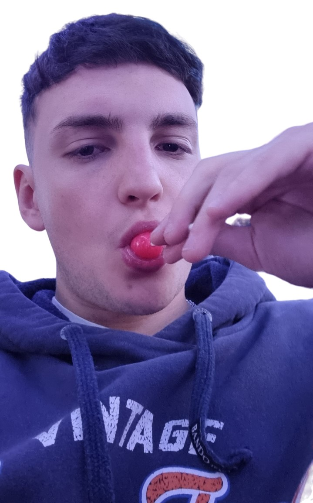

Sobre mi
Soy un desarrollador de software junior con experiencia en desarrollo backend y frontend. Estoy apasionado por la tecnologia y me encanta crear soluciones innovadoras que ayuden a las personas.
Me gradue en la Universidad Tecnologica Nacional de Rosario como Analista Universitario de Sistemas de la Informacion. Durante mis estudios, me especialice en desarrollo web. Tambien tuve la oportunidad de participar en varios proyectos de investigacion y desarrollo, lo que me permitio adquirir experiencia en diferentes tecnologias y metodologias.